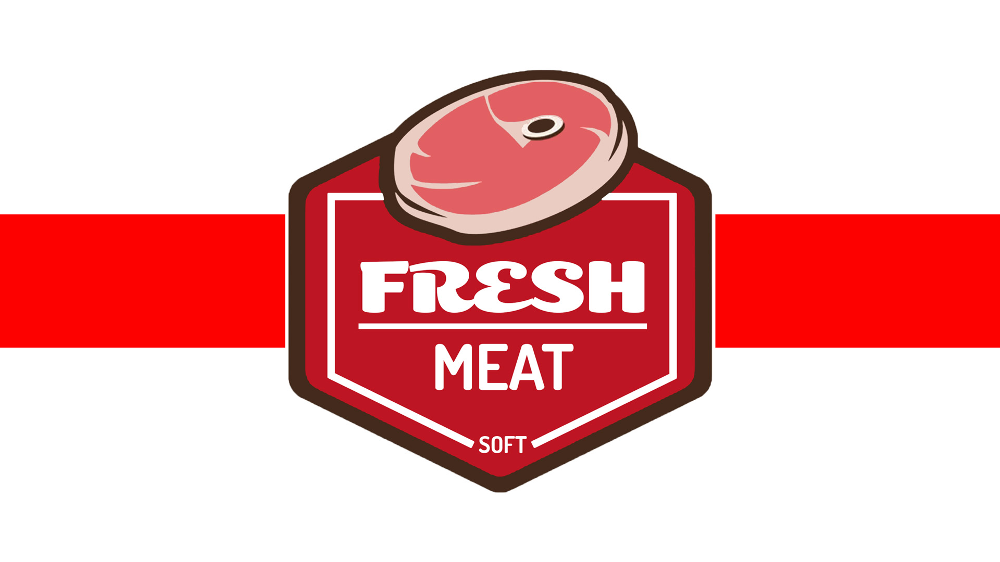
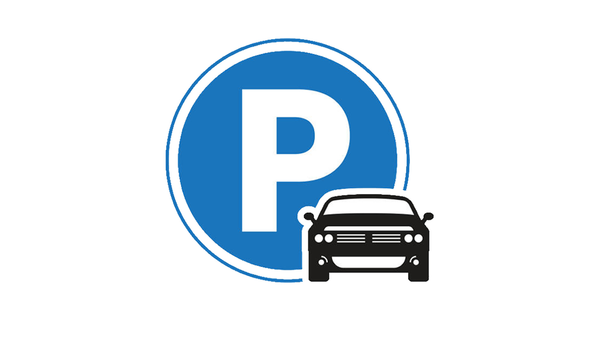
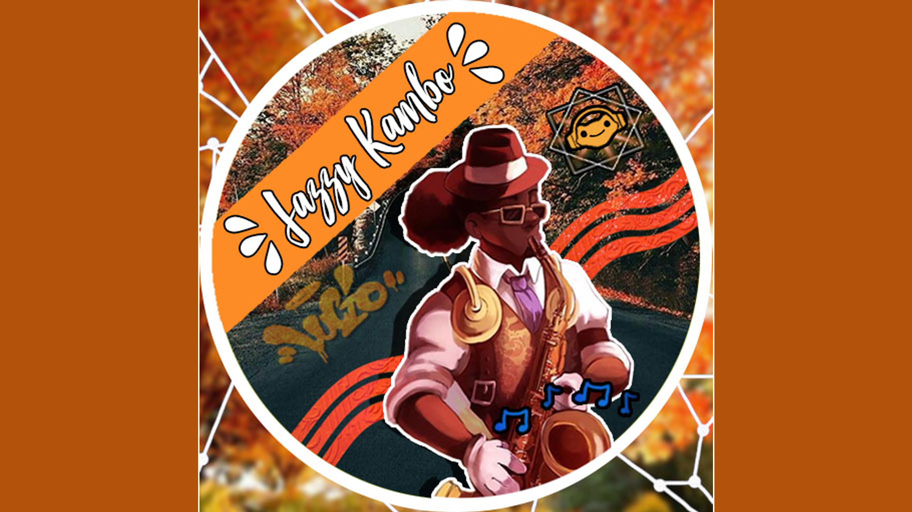
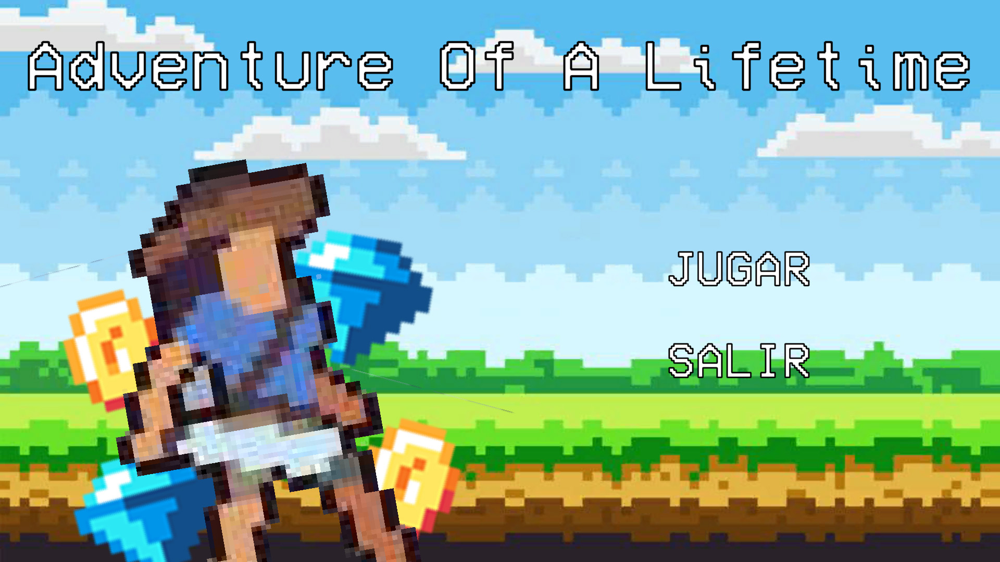
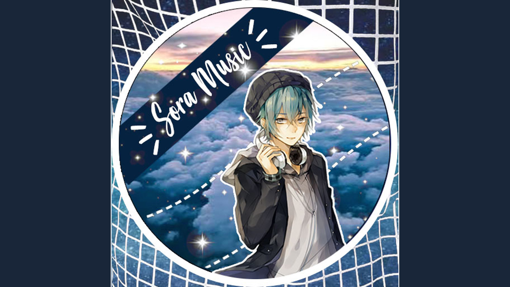

La mascota virtual nos permite reducir el estrés y hacer conciencia
para el cuidado de los animales, cada cierto tiempo sus estadisticas
se reducen, el jugador debe evitar de que este muera de lo contrario
quederá en su conciencia dicha perdida.

Fresh Meat Soft
El software nos permite tener un monitoreo de las temperaturas en de
las vitrinas de las carnicerías para evitar que haya perdidas, además
cuenta con una serie de herramientas adicionales como una
administración de inventario, control de ventas y empleados.

Parking
El estacionamiento automatizado nos permite hacer que los procesos de
este tipo de estacionamiento sea más rapido, logrando que sus usuarios
encuentren lugares disponibles de manera inmediata, de lo contrario se
avisa para que no pierdan su tiempo, los administradores pueden tener
la certeza y seguridad de que llevarán un buen control con este
software.
Tarifario de Clientes
Está aplicación nos permite realizar cálculos de guias de viaje según
la relación de los convenios que tiene una empresa de paquetería con
sus clientes, anteriormente se hacia el cálculo de forma manual, sin
embargo por la complejidad y la pérdida de tiempo se opto por hacer
esta herramienta.

Jazzy Lucio
Uno de mis personajes favoritos de los videojuegos, siempre fue Lucio
de Overwatch, me encanta su actitud y su idelogía de luchar por la paz
utilizando la música a su favor, de esta forma quería hacer un edit
casual en mi tiempo libre .

Adventure Of a Lifetime
Una aventurera muy ambiciosa está en busqueda del tesoro más apreciado
por toda la tierra; la corona del rey Arturo, sin embargo se
encontrará con una serie de diversos obstaculos y enemigos que deberá
cruzar para cumplir la hazaña, formando parte de los libros de
historia.

Sora Music
Sin duda alguna durante mis épocas de juventud, me encantaba el reunir
toda mi imaginación para crear personajes ficticios con historias muy
interesantes, una de ellas fue Sora Music, un apasionado joven por la
música, que siempre le encantaba estar rodeado con los demás y estar
para ellos cuando los necesitaba, por ello lo quise ejemplificar en un
edit.
Mercado Oscuro
Está aplicación nos permite hacer compras y ventas de los diversos
productos que queramos vender en ella, además de contar con un sistema
de tracking funcional que le permite tanto al usuario como al vendedor
tener una visión de donde se encuentra el pedido.